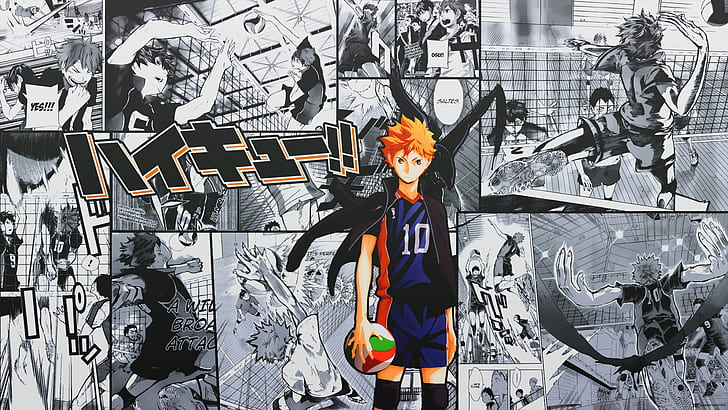
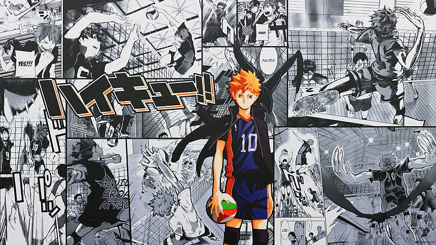

Haikyu!! (яп. ハイキュー!! хайкю:!!) — спортивная манга, а также аниме про волейбол, созданная Харуити Фурудатэ. Манга выпускалась с февраля 2012 года по июль 2020 года в журнале Weekly Shōnen Jump издательства Shueisha. Впервые история была представлена и опубликована в виде ваншота в журнале Jump NEXT! издательства Shueisha до полноценного выпуска. Всего было выпущено 45 томов манги. На её основе были выпущены аниме-сериал, несколько полнометражных фильмов, радиопостановки, компьютерные игры и спектакли.
Долгое время Хината Сё не мог определиться с выбором спортивного кружка, но однажды мальчишка увидел турнир по волейболу. В этом состязании принимал участие "Маленький гигант", который выступал за школу Карасуно. Хината был поражён игрой низкорослого игрока, а потому школьник решил заниматься волейболом. Вот только в средней школе не было кружка по этому виду спорта, и рыжеволосый парень начал тренироваться самостоятельно. Многое у мальчишки не получалось, но желание стать лучшим волейболистом сотворило чудо. Вскоре парень попал на отборочный турнир, где принимали участие ученики средних школ. На этих соревнованиях Сё повстречал Кагеяму Тобио, которого все звали "Королём площадки". Оказалось, что команда Хинаты состояла из друзей, которые слабовато играют в волейбол. Очередным препятствиям стало то, что первый матч необходимо было сыграть с фаворитами турнира. Во время игры Сё показал себя во всей красе, ведь он сумел честно заработать важные очки для команды, но всё же ребята проиграли. После поражения Хината начал ещё больше тренироваться, ведь впереди юношу ожидает поступление в старшую школу Карасуно, где состоится судьбоносная встреча с Тобио.
 
